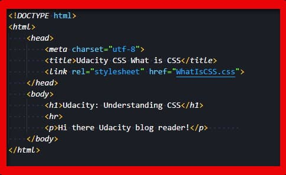
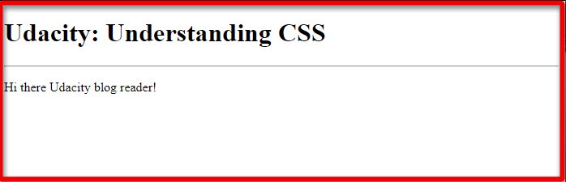
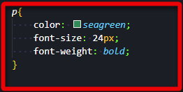
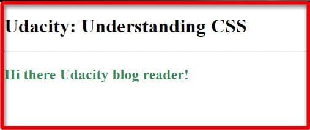
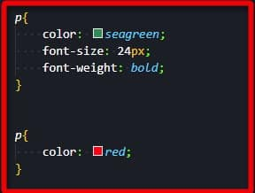
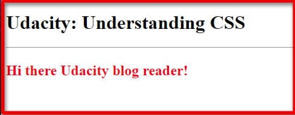
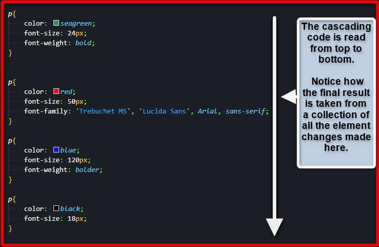
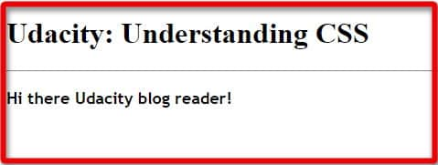

Learning Cascading Style Sheet
Posted by Allan Bryan Vinluan
What is Cascading Style Sheet or CSS?
Last Updated on October 23, 2024
For those beginners just getting started with web design, a single direct question always seems to come up right away. Just what is CSS? CSS, or cascading style sheets, is the designer’s link to a toolset that allows for truly amazing style options on an HTML document.
In this short guide, you will learn what a cascading style sheet is, how to create one, and how to use it in your own HTML document. Sample code and images are provided within the guide to help you along the way as well.
What is CSS and What Does Cascading Style Sheet Even Mean?
To answer the question of “what is CSS”, you simply need to know what those three letters stand for. CSS is an acronym for the term “Cascading Style Sheet”, a great tool used in web design.
The style sheet is just as its name implies. This is where your unlimited style potential is set for use. Where HTML provides the bones or structure to a document, CSS injects the style for it. CSS allows you to manipulate HTML elements in various ways such as size, shapes, colors, or even interactions from the end-users. Think of CSS as a toolbox that you can reference when trying to fine-tune the website appearance to your needs.
Where Does the Cascade in CSS Come In?
Now that you have an answer to “what is CSS”, you might be curious as to the mention of cascading. The cascading term is used due to the way design values are read from the sheet.
You can use CSS to apply multiple styles on a single HTML document. Those styles can affect the same element once, twice, or many more times over. As these style changes are written into the CSS file, they take a form of precedence from their location. This concept will be explained in the following examples.
In the sample code image below you have a very basic HTML document with no CSS work applied.

Using this code, the page will render with this basic appearance.

Now to spice things up, a small bit of CSS is going to be used for the paragraph element on the HTML document.

That CSS addition will render the paragraph element on the page as shown below.

As you can see, the paragraph element has increased in size, become bold, and changed color to sea green. Now in the next example, the paragraph element will be used again in the stylesheet. Notice that the previous use of the paragraph element is still on the sheet.

Now the stylesheet has two instances of the paragraph element in place. The first gives it three property values to work with, one of which is the color of sea green. However, the next use of the paragraph element also gives it a color value as well. In the image below, you can see how the page will render with this code in place.

The HTML page rendered the paragraph element with the value of red instead of sea green. This is because the next or most recent style applied to that element was the color red.
The web browser “reads” the CSS as it is written and applies it to the HTML document. So this means that the color, font-size, and font-weight properties were taken in as they came up and applied to the paragraph element.
However, another paragraph element was added underneath the first in the CSS file. This means that the HTML document then moved on to that one and took whatever was inside of it. The only property value it found was the color change to red. It applied this to the paragraph element and gave a final render that was seen above.
Consider the styles applied on the CSS file to be a waterfall of sorts. The code cascades down as water does in the waterfall. The HTML document reads through the flow and applies whatever it finds along the way.
The Cascade Example
In the pursuit of the question of “what is CSS”, visual examples are a great help. To that end, this next section will build on the cascading details provided in a more visual approach. Below, you will see another set of CSS code. Again, multiple styles have been applied to the single paragraph tag on the HTML document.

This will help to demonstrate just how the cascading style is taken in by the HTML document. The color and size change in each set. Notice that a font-family property was also added in the second set.
If you look at the way the style code cascades down, you can see which properties are being added and which ones are being changed along the way. With that code in place, the HTML page will render in the following format.

The final coloring and font-size values were taken from the last entry on the stylesheet. The font-family and font-weight properties were added along the way and kept on the final render as well. This provides the example image you see above.